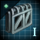

Technology
Version
This article is for the PC version of Stellaris only.
Technology in Stellaris is divided into 3 research areas with each area corresponding with one of the research resources:  Engineering,
Engineering,  Physics and
Physics and  Society. Additionally, each of the ~400 techs belongs to one of 13 subcategories divided between the areas (most appearing pre-dominantly in one area though not exclusively).
Society. Additionally, each of the ~400 techs belongs to one of 13 subcategories divided between the areas (most appearing pre-dominantly in one area though not exclusively).
The user interaction aspect utilizes a card shuffle approach rather than a traditional tech tree presentation, thereby introducing an element of semi-randomness into the system.
Each technology has a base cost which is modified by "Technology and Tradition Cost" (from galaxy settings set when starting a new game) and by  empire size (the research cost is increased by 0.2% for each point of empire size above 100).
empire size (the research cost is increased by 0.2% for each point of empire size above 100).
Research areas & fields

There are three different main research areas in-game, with each area corresponding with one of the research resources. Additionally, each research area has multiple subcategories, for a total of 13 such subcategories, and every tech belongs to one of these subcategories.
The areas and their subcategories are as follows:
 Computing: research labs, research speed, science ships, ship computers, point-defense, sensors, espionage, Cosmogenesis advancement technologies.
Computing: research labs, research speed, science ships, ship computers, point-defense, sensors, espionage, Cosmogenesis advancement technologies. Field Manipulation: energy production, shields, cloaking devices, astral rifts, some strategic resources, cosmic storm manipulation.
Field Manipulation: energy production, shields, cloaking devices, astral rifts, some strategic resources, cosmic storm manipulation. Particles: ship reactors, energy weapons, FTL travel, some strategic resources.
Particles: ship reactors, energy weapons, FTL travel, some strategic resources.
 Biology: food production, genetic modification, leader lifespan and enhancement, biological ship components, army types.
Biology: food production, genetic modification, leader lifespan and enhancement, biological ship components, army types. Military Theory: fleet command limit, naval capacity, army buildings and stats, claim cost.
Military Theory: fleet command limit, naval capacity, army buildings and stats, claim cost. New Worlds: habitability, terraforming, blocker removal, station capacity, upgraded capital buildings.
New Worlds: habitability, terraforming, blocker removal, station capacity, upgraded capital buildings. Statecraft: unity and edicts, leaders, envoys, diplomacy, upgraded capital buildings, various buildings for unity, trade and amenities.
Statecraft: unity and edicts, leaders, envoys, diplomacy, upgraded capital buildings, various buildings for unity, trade and amenities. Psionics, exotic technologies unlocked in mid to late game, associated with psionic ascension.
Psionics, exotic technologies unlocked in mid to late game, associated with psionic ascension. Archaeostudies: archaeology, minor artifacts, archaeotechnologies (requires
Archaeostudies: archaeology, minor artifacts, archaeotechnologies (requires  Ancient Relics DLC)
Ancient Relics DLC)
 Industry: mineral production, robotics, building construction, cosmic storm protection.
Industry: mineral production, robotics, building construction, cosmic storm protection. Materials: armor, industrial buildings, strategic resources.
Materials: armor, industrial buildings, strategic resources. Propulsion: kinetic and explosive weapons, thrusters.
Propulsion: kinetic and explosive weapons, thrusters. Voidcraft: ship types and hulls, starbases, strike craft, megastructures.
Voidcraft: ship types and hulls, starbases, strike craft, megastructures.
Technology cards
{kind=link}
Although the underlying technology system is based on the familiar tech tree structure, it does away with the traditional interaction/presentation in favor of the card shuffle approach. This injects a semi-random element into research, making it somewhat less predictable as well as less linear.
Whenever the player is prompted to initiate a research project, the game gives them a "hand of cards" consisting of a semi-random selection of technologies available for research, which are picked randomly from a hidden "deck of cards" consisting of all valid research options that can appear. A new hand of cards will be drawn whenever a research project is completed, and its technology researched.
Technologies are divided into 6 tiers (T0 to T5) of advancement. Higher tier technologies require obtaining a certain number of technologies from the preceding tier in the same area of research (set at 6 for all tiers[1]) before they become available as research alternatives.
Every time the player meets the requirements for a given technology to become obtainable, the technology in question is added into the main "card deck" and then has a chance of appearing in the "card hand" whenever the game draws a new hand for the player to pick from. There is one basic parameter affecting a tech's chances of appearing in a given card hand:
- Weight – A base value denoting the relative chance (out of all the valid options) of a particular technology to be drawn as an alternative. This may be further modified by an empire's composition (ethics, civics, etc.) and its current state (scientist's traits, past tech, etc.).
To further increase variation, a technology which appeared as an alternative in the previous card hand has its weight halved in the next draw, resetting after that.
In general, the more advanced a technology is, the lower its weight (and the higher its cost). Systematically important techs (e.g. terraforming) have a higher weight (typically between 150% and double normal) to help ensure empires get a chance to research them, whereas rare technologies have significantly lower weight (typically one-eighth of the normal without the matching expertise).
Some factors increase the weight of certain technologies:
| Technology type | Source | Effect |
|---|---|---|
| Rare technologies | ×2 | |
| ×1.5 | ||
Dimensional Worship civic |
×1.1 | |
| FTL technologies | ×1.5 | |
| Cloaking technologies | ×5 | |
| Terraforming technologies | ×1.25 | |
| Each tech field (except |
| |
| ||
|
Research can be automated, in which case the game picks the cheapest technology available to research unless a rare technology is available for research, in which case the game will pick that. Note that AI players do not operate this way, and instead have a more complex logic for determining what to research.
Example
Let's assume the game draws a card hand of 3 techs:  Armored Torpedoes,
Armored Torpedoes,  Autocannons, and
Autocannons, and  Exotic Gas Refining. Additionally, a councilor scientist has the
Exotic Gas Refining. Additionally, a councilor scientist has the 


 Expertise: Propulsion II trait (matching Armored Torpedoes), and the previous card hand had
Expertise: Propulsion II trait (matching Armored Torpedoes), and the previous card hand had  Autocannons as an available option.
Autocannons as an available option.
Failed to parse (SVG (MathML can be enabled via browser plugin): Invalid response ("Math extension cannot connect to Restbase.") from server "https://en.wikipedia.org/api/rest_v1/":): {\displaystyle \text{Total weight} = \text{Armored Torpedoes weight}\, \cdot\, \text{expertise bonus} +\, \text{Autocannons weight}\, +\, \text{Exotic Gas Refining weight}}
Failed to parse (SVG (MathML can be enabled via browser plugin): Invalid response ("Math extension cannot connect to Restbase.") from server "https://en.wikipedia.org/api/rest_v1/":): {\displaystyle \text{Total weight} = 60 \cdot 1.25\, +\, \frac{75}{2}\, +\, 170 = 75 +\, 37.5 +\, 170 = 282.5}
If these were the only three valid techs and only one tech were to be drawn, then each tech's chances of being drawn would be 26.5%, 13.3%, and 60.2% respectively (rounded to 1 decimal place). Realistically, there are usually many more valid picks and so the probability of picking any given tech is significantly lower than the figures given here.
Research alternatives
By default, each card hand drawn contains a selection of 3 researchable technologies, or research alternatives, but this number can be further increased by a variety of factors. Additionally, some research cards may be gained as permanent alternatives. They appear below the regular alternatives and are distinguished from them by a golden border surrounding the tech card's bezel. These alternatives are usually acquired (along with some partial progress) through post-battle debris analysis, from special projects, anomalies, archaeological site, situations, or other events. These options will always appear as available options when drawing a new card hand and will remain as such until fully researched.
If need be, it is possible to change an on-going research project at any point – without losing research progress – and continue researching it at a later time. It is important to note, however, that the research progress is only saved as an absolute value and not a percentage, and therefore does not scale with changes to technology costs (for better or for worse). This means that if a technology is left partially researched and the empire's  empire size increases before it is fully researched, this will cause the technology's relative progress percentage to decrease as technology cost increases alongside empire size.
empire size increases before it is fully researched, this will cause the technology's relative progress percentage to decrease as technology cost increases alongside empire size.
Unless a given technology card has appeared as a permanent alternative, there is no guarantee for said technology card to appear again in the next card hand drawn, although it will reappear again eventually through sheer probability after enough new hands have been drawn, and the more research alternatives that each card hand contains, the higher the probability of it appearing as one of them.
The number of research alternatives per card hand can be increased by the following:
| Research alternatives | |
|---|---|
| Source | Effect |
| +1 | |
| +1 | |
| +1 | |
| +1 | |
| +1 | |
| +1 | |
| +1 | |
| +1 | |
| +1 | |
| +1 | |
| +1 | |
| +1 | |
| +1 | |
| −1 | |
| −1 | |
Research progress
In general, research time can be summarized as the following formula:
Failed to parse (SVG (MathML can be enabled via browser plugin): Invalid response ("Math extension cannot connect to Restbase.") from server "https://en.wikipedia.org/api/rest_v1/":): {\displaystyle \text{Research time} = \sum\frac{\text{Research cost} -\, \text{Partial research done} }{ \text{Monthly research progress} }}
Research progress is one of the key elements affecting the time it takes to discover new technologies. It is formulated as follows:
Failed to parse (SVG (MathML can be enabled via browser plugin): Invalid response ("Math extension cannot connect to Restbase.") from server "https://en.wikipedia.org/api/rest_v1/":): {\displaystyle \text{Monthly research progress} = \text{Research resource produced}\, \cdot\, \sum\text{Research speed modifiers}\, +\, \text{min}[\text{Research resource stored},\text{Research resource produced}]}
While it is possible for the monthly research progress to remain constant during the course of researching a certain technology, it is more than likely to fluctuate – for better or for worse – due to consequences, effects and outcomes of various actions (such as exploration, empire development, expansion, etc.). This, in turn, may increase or decrease the total research time of a given tech.
The most prominent example of this is  empire size. If empire size increases above 100, then every additional point of empire size above that will increase the research cost of technologies by +0,2% per point.
empire size. If empire size increases above 100, then every additional point of empire size above that will increase the research cost of technologies by +0,2% per point.
Example
The empire from the previous examples (same setup) has just finished debris analysis granting it +10% research progress in  Armored Torpedoes along with
Armored Torpedoes along with  +1000 engineering research (stored research).
+1000 engineering research (stored research).
This setup generates the following monthly research progress:
Failed to parse (SVG (MathML can be enabled via browser plugin): Invalid response ("Math extension cannot connect to Restbase.") from server "https://en.wikipedia.org/api/rest_v1/":): {\displaystyle \text{Monthly research progress} = 24\, \cdot\, (1\, +\, 0.05\, +\, 0.15)\, +\, \text{min}[1000, 24] = 52.8 }
Assuming no further changes impact the above setup, the total research time of the tech would be:
Failed to parse (SVG (MathML can be enabled via browser plugin): Invalid response ("Math extension cannot connect to Restbase.") from server "https://en.wikipedia.org/api/rest_v1/":): {\displaystyle \text{Research time} = \frac{1862\, -\, 1862 \cdot\, 0.1 }{ 52.8 } = \text{31.74 months}}
Note: Partial research can refer to debris analysis, previous research, event rewards, etc.
Debris
Debris has a chance of spawning when at least one ship from a hostile enemy fleet is destroyed. Debris can provide progress on most components, weapons, and defenses, but not ship upgrades. The following are examples of technologies that cannot be obtained from debris:
- Standardized Corvette Patterns (or any other cost-reducing technologies)

Improved Corvette Hulls (or any other non-component ship upgrade technologies) Destroyers (or any other ship hull size)
Destroyers (or any other ship hull size) Synapse Interceptors (or any other repeatable technologies)
Synapse Interceptors (or any other repeatable technologies) Psionic Shields (or any other Psionic technologies)
Psionic Shields (or any other Psionic technologies)
Each component can only spawn if the components are above the technology level of the empire researching the debris. Each component debris provides 10% progress on the technology, or 10% progress on the prerequisite technology if the prerequisite technology is unresearched. If no component can be spawned, then debris will give a small amount of stored research from a relevant area instead.
If the  debris policy is Scavenge, no research benefit will be gained, and debris will instead yield resources equal to 10% of the ship's build cost.
debris policy is Scavenge, no research benefit will be gained, and debris will instead yield resources equal to 10% of the ship's build cost.
If the destroyed ships belonged to an empire that has the  Enigmatic Engineering ascension perk, then those ships will not leave any debris.
Enigmatic Engineering ascension perk, then those ships will not leave any debris.
Salvager trait and Scavengers civic
The  Scavengers and
Scavengers and  Refurbishment Division civics enable the
Refurbishment Division civics enable the  debris policy Research & Salvage Debris which allows for debris to generate both research and resources as well as a chance to salvage a ship of equal hull size from said debris; without those civics, only Research or Scavenge can be chosen and the ability to salvage ships requires a
debris policy Research & Salvage Debris which allows for debris to generate both research and resources as well as a chance to salvage a ship of equal hull size from said debris; without those civics, only Research or Scavenge can be chosen and the ability to salvage ships requires a  scientist with the
scientist with the 


 Salvager or
Salvager or 


 Master Salvager traits to be in the same system.
Master Salvager traits to be in the same system.
If Research & Salvage Debris is enabled and a scientist with the Salvager or Master Salvager trait is in the same system, there is an additional 5% combo bonus chance to salvage a ship.
The precise formula is as follows; the same chance is applied independently for each potential salvageable ship in the debris:
Failed to parse (SVG (MathML can be enabled via browser plugin): Invalid response ("Math extension cannot connect to Restbase.") from server "https://en.wikipedia.org/api/rest_v1/":): {\displaystyle \% \text{ chance to salvage ships from debris} = (10 + \text{additional salvage chance} + \text{combo bonus}) \cdot \text{Salvager trait level}} [2]
The final salvage chance is calculated as the sum of additional bonuses and combo bonuses, namely from the Scavengers civic (which gives +10% additional salvage chance) and its associated Master Scrapper council position (which gives +1% salvage chance per leader level) as well as the the 


 Salvager or
Salvager or 


 Master Salvager traits (which give a +10%/+20%+30% and +15% salvage chance, respectively), multiplied by the Salvager trait level of the salvaging scientist. If none are present, then the respective value is set to 0. The minimum base salvage chance is 10% without civic, council, combo or trait bonuses, but the Scavengers civic doubles this to a minimum of 20%.
Master Salvager traits (which give a +10%/+20%+30% and +15% salvage chance, respectively), multiplied by the Salvager trait level of the salvaging scientist. If none are present, then the respective value is set to 0. The minimum base salvage chance is 10% without civic, council, combo or trait bonuses, but the Scavengers civic doubles this to a minimum of 20%.
If multiple scientists with Salvager traits are present in the same system, then their trait levels will be tallied up additively to calculate the "Salvager trait level" value. If a scientist with Master Salvager is present, they will apply a 1.5 multiplier to the result of that value. Thus, having two level 3 Salvagers and a Master Salvager in the same system would give a "Salvager trait level" value of 9, equating to a 9 times multiplier to the base additive chance as the result.
With additional salvage chance of 0:
| % Chance to salvage ships | Salvager Trait Level | ||
|---|---|---|---|
| 1 | 2 | 3 | |
| 10 | 20 | 30 | |
| Combo Bonus | 15 | 30 | 45 |
Research output
Each research area employs the use of a different research resource.
Each of these individual resources has a base production of 10 research points a month. Most research output comes from pops working the appropriate jobs or research stations on space deposits.
Research production can be modified for total empire production, job output, research stations (and starbase buildings), or for  researcher category jobs. Note, governors only provide the full effect of their traits on the planet they directly govern, and half of that to all other planets in the sector. Other modifiers can affect research output by changing base research output or affecting all resources from jobs.
researcher category jobs. Note, governors only provide the full effect of their traits on the planet they directly govern, and half of that to all other planets in the sector. Other modifiers can affect research output by changing base research output or affecting all resources from jobs.
| Monthly research | Research from jobs | Effect | |||
|---|---|---|---|---|---|
| Empire | Planet | Governor | Species | ||
| +100% | |||||
| +50% | |||||
| +40% | |||||
|
+30% | ||||
| +25% | |||||
| +20% | |||||
| +16% | |||||
|
|
|
+10% | ||
| +7.5% | |||||
|
+5% | ||||
| +2% | |||||
| −5% | |||||
| −7.5% | |||||
| −10% | |||||
| −15% | |||||
| −25% | |||||
| −30% | |||||
| −40% | |||||
| −50% | |||||
| −55% | |||||
| −60% | |||||
| −75% | |||||
| −70% | |||||
| −100% | |||||
{kind=link}
{kind=link}
| Research from jobs | Effect | ||
|---|---|---|---|
| Planet features | Planet modifiers | Other sources | |
|
|
+30% | |
|
|
|
+20% |
|
|
+15% | |
|
|
|
+10% |
| +5% | |||
| Research from jobs | Effect | ||
|---|---|---|---|
| Planet features | Planet modifiers | Other sources | |
|
+30% | ||
|
|
|
+20% |
|
+15% | ||
|
+10% | ||
| +5% | |||
| Research from jobs | Effect | ||
|---|---|---|---|
| Planet features | Planet modifiers | Other sources | |
| +33% | |||
|
+30% | ||
|
+25% | ||
|
|
+20% | |
|
|
|
+15% |
|
|
|
+10% |
{kind=link}
| Monthly research | ||||
|---|---|---|---|---|
| Effect | ||||
| +40% | ||||
| +30% | ||||
| Studying the Decaying Fang | +20% | |||
| +15% | ||||
|
|
|
+10% | |
| Genius Caeli: A Time of Knowing | +6% | |||
| Harvesting Negative Mass Interstellar Flow Prediction |
Cloud's Boon | Peeyeps' Legacy | +5% | |
| Technological Advancement | +3% | |||
| Genius Caeli: Balanced Prosperity Peeyeps' Legacy |
Genius Caeli: A Time of Knowing | +2% | ||
| Helpful Overlord | −5% | |||
|
|
|
−10% | |
| −25% | ||||
| −30% | ||||
| −40% | ||||
| −50% | ||||
| Vengralian Trium Invoice | −100% | |||
| Research from jobs (empire) | ||||
|---|---|---|---|---|
| Effect | ||||
| +25% | ||||
| +10% | ||||
| −5% | ||||
| −10% | ||||
| −25% | ||||
| −30% | ||||
| −40% | ||||
| −55% | ||||
| −70% | ||||
| Researcher jobs and research stations | ||
|---|---|---|
| Researcher category jobs | Research station output | |
| +50% | ||
|
+40% | |
|
+30% | |
|
|
+20% |
|
+10% | |
|
+5% | |
| −10% | ||
| −15% | ||
| −20% | ||
| −25% | ||
|
−50% | |
Stored research
Whenever research output is not actively used, it will accumulate as stored research. Stored research also includes research resources gained from other avenues that give lump sums of research in bulk, such as debris analysis, anomalies, events, etc.
This allows for a more "relaxed" approach to research by eliminating the potential loss of research points due to forgetting to pick a research project while, at the same time, also simulating accelerated periods of research (as opposed to sudden "jumps") caused by newfound knowledge sources. The current storage levels can be seen by hovering over the appropriate resources.
Once a research project is initiated, any accumulated stored research will be consumed at a rate matching the current output, effectively doubling the total research output, until the amount of stored research left falls below the monthly output, after which any remaining stored research will be consumed in the next month to empty the storage. If the monthly research output changes, then the consumption rate will also adjust accordingly.
- Example
An empire produces  +24 engineering research each month and has just finished a debris analysis granting it
+24 engineering research each month and has just finished a debris analysis granting it  +1000 engineering research, which is collected as stored research.
+1000 engineering research, which is collected as stored research.
Failed to parse (SVG (MathML can be enabled via browser plugin): Invalid response ("Math extension cannot connect to Restbase.") from server "https://en.wikipedia.org/api/rest_v1/":): {\displaystyle \text{Stored research expenditure length} = \frac{\text{1000}}{ \text{24}} =\, \text{41.67 months}}
When researching, the empire will supplement its  engineering research by an additional +24 research points for the next 41 months, then supplement it by +16 research points in the 42nd month, after which the stored
engineering research by an additional +24 research points for the next 41 months, then supplement it by +16 research points in the 42nd month, after which the stored  engineering research is completely depleted.
engineering research is completely depleted.
Research speed
Research speed represents a given expertise in a particular research area or field leading to shortened research time of related technologies.
Research speed boosts the effective research production in the following manner:
Failed to parse (SVG (MathML can be enabled via browser plugin): Invalid response ("Math extension cannot connect to Restbase.") from server "https://en.wikipedia.org/api/rest_v1/":): {\displaystyle \text{Effective research production} = \text{Research resource produced}\, \cdot\, \sum\text{Research speed modifiers}}
The most immediate sources of research speed modifiers are the scientists in your council. As the applied bonus depends on a scientist's skill level and overall traits, it is recommended to assign newly recruited scientists to command a science ship. Scientists on exploration duty tend to gain experience faster and, if one is in luck, they may also gain a new trait beneficial to research while leveling up.
- Example
An empire is a  Materialist and produces
Materialist and produces  +24 engineering research a month. It has a councilor scientist with
+24 engineering research a month. It has a councilor scientist with 


 Expertise: Propulsion III while researching
Expertise: Propulsion III while researching  Armored Torpedoes.
Armored Torpedoes.
Failed to parse (SVG (MathML can be enabled via browser plugin): Invalid response ("Math extension cannot connect to Restbase.") from server "https://en.wikipedia.org/api/rest_v1/":): {\displaystyle \text{Effective research production} = 24\, \cdot\, (1\, +\, 0.05\, +\, 0.15)\, = 28.8 }
Note: An empire without a  Head of Research councilor receives a −25% penalty to research speed.
Head of Research councilor receives a −25% penalty to research speed.
Research Speed is affected by the following permanent or renewable modifiers. Other temporary modifiers to research speed may be gained from events or anomalies.
| Research speed (empire) | |
|---|---|
| Source | Effect |
| +20% | |
| +15% | |
| +10% | |
| +10% | |
| +10% | |
| +10% | |
| +10% | |
| +10% | |
| +10% | |
| +10% | |
| +10% | |
| +10% | |
| +10% | |
| +10% | |
| +6% | |
| +5% | |
| +5% | |
| +5% | |
| +5% | |
| +5% | |
| +5% | |
| +5% | |
| +5% | |
| Cybernetic Creed advanced authority | +5% |
| +5% | |
| +5% | |
| +5% | |
| +5% | |
| +5% | |
| +5% | |
| +5% | |
| −5% | |
| −5% | |
| Research speed (council) | |
|---|---|
| Source | Effect |
| +10% | |
| +10% | |
| +10% | |
| +10% | |
| +9% | |
| +7.5% | |
| +6% | |
| +6% | |
| +5% | |
| +5% | |
| +5% | |
| +4% | |
| +3% | |
| +3% | |
| +2% per level (+20% max) | |
| +2% | |
| +1% | |
| −5% | |
| −5% | |
| −10% | |
| −25% | |
| Research speed (field) | |
|---|---|
| Source | Effect |
| Any field | |
| +15% | |
| +10% | |
| +5% | |
| +20% | |
| +7.5% | |
| +7.5% | |
| +7.5% | |
| +33% | |
| +10% | |
| +20% | |
| +7.5% | |
| +7.5% | |
| +40% | |
References
See also
External link: Index of Stellaris technologies by game version, assembled into a horizontal tech tree.(GitHub)
| Exploration | Exploration • FTL • Unique systems • L-Cluster • Pre-FTL species • Fallen empire • Spaceborne aliens • Enclaves • Guardians • Marauders • Caravaneers |
| Celestial bodies | Celestial body • Colonization • Planetary features • Planet modifiers |
| Discovery | Discovery • Anomaly • Archaeological site • Astral rift • Relics • Collection |
| Species | Species • Pop modification • Biological traits • Machine traits • Population • Species rights • Ethics |
| Leaders | Leader • Common leader traits • Commander traits • Official traits • Scientist traits • Paragons |
| Governance | Empire • Origin • Government • Civics • Council • Policies • Edicts • Factions • Traditions • Ascension perks • Ambition • Situations |
| Economy | Resources • Planetary management • Districts • Jobs • Designation • Trade • Megastructures • Waystation |
| Buildings | Planet capital • Common buildings • Planet unique • Empire unique • Holdings |
| Ships | Ship • Arkship • Ship designer • Core components • Weapon components • Utility components • Mutations • Offensive mutations |
| Technology | Technology • Physics research • Society research • Engineering research |
| Diplomacy | Diplomacy • Relations • Galactic community • Federations • Subject empires • Intelligence • Contracts • AI personalities |
| Warfare | Warfare • Space warfare • Land warfare • Starbase • Crisis |
| Others | Events • The Shroud • Preset empires • AI players • Stat modifiers • Console commands • Easter eggs |